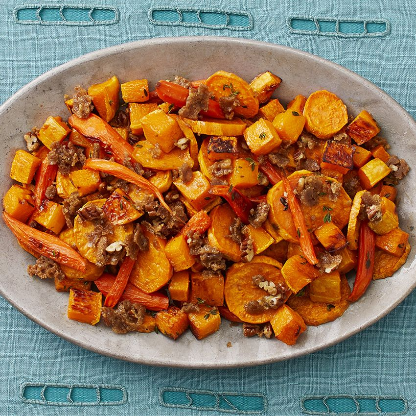

Roasted Vegetables with Pecan Crumbles

Description
Brown sugar makes all the difference with these roasted veggies! Everyone will ask you for the recipe after dinner.
Ingredients
For the Crumble:
- 1/2 c.
- packed dark brown sugar
- 1/2 c.
- pecans, chopped
- 1/4 c.
- all-purpose flour
- 3 tbsp.
- salted butter, at room temperature
- Pinch of smoked paprika
- Kosher salt, to taste
For the Vegetables:
- 4
- medium sweet potatoes, peeled and sliced into 1/4-inch-thick rounds
- 1
- small butternut squash, peeled, seeded and cut into 3/4-inch cubes
- 1 lb.
- carrots, peeled and cut into 2 1/2-inch sticks
- 3 tbsp.
- olive oil
- 2 tsp.
- fresh thyme, chopped
- 1 1/2 tsp.
- kosher salt
- Black pepper, to taste
Steps
- For the crumble: Preheat the oven to 425 ̊. Line a baking sheet with parchment paper. Combine the brown sugar, pecans, flour, butter, paprika and a pinch of salt in a medium bowl and mash with a fork. Spread the mixture on the baking sheet and bake until everything has melted together and the crumble is golden brown, 5 to 7 minutes. Let cool completely, about 20 minutes. Use your hands to crumble the mixture and set aside.
- For the vegetables: Combine the sweet potatoes, squash, carrots, oil, thyme, salt and a few grinds of pepper in a large bowl and toss. Divide the vegetables between 2 baking sheets, spread them in an even layer and roast, switching the pans halfway through, until the vegetables are softened and golden brown in spots, 30 to 35 minutes. Transfer to a platter and top with the crumble.